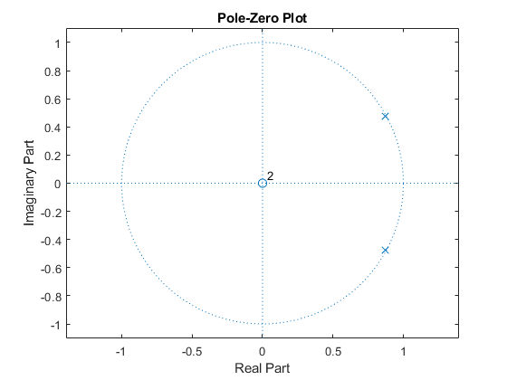
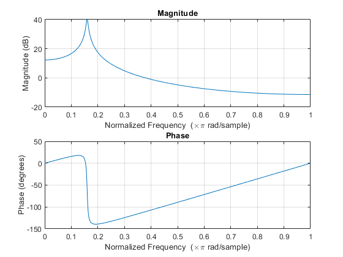

Note Detection - MP05
Contents
1 - Overview
This project detect the frequency of the notes played in 8 different files. To do this, 13 different bandpass IIR filters were created at different frequencies. Each tone gets run through all 13 filters, whichever filter output has the highest power is selected as the tone.
2 - Plots
filename = '../assets/audio/Note02.wav'; [xx, fs] = audioread(filename); f0 = 440; % fundamental frequency w = f0/fs*2; % find the scaled radian value of the frequency % have the roots be a complex conjugate pair that gets converted into polynomial coefficients % scale poles so they are not on the unit circle a = poly(0.99*[exp(-1i*w*pi),exp(1i*w*pi)]); b = 1; % zero at the origin figure(1) zplane(b,a); figure(2) freqz(b,a,1000); 
3 - Run Code
list = cell(8,1); for i = 2:9 filename = ['../assets/audio/Note0',num2str(i),'.wav']; [xx, fs] = audioread(filename); noteNum = toneDetect(xx,fs); freq = round(440*2.^(noteNum/12)); list(i-1) = {sprintf([filename,': %d Hz'],freq)}; end disp(list)
{'../assets/audio/Note02.wav: 440 Hz'}
{'../assets/audio/Note03.wav: 494 Hz'}
{'../assets/audio/Note04.wav: 554 Hz'}
{'../assets/audio/Note05.wav: 587 Hz'}
{'../assets/audio/Note06.wav: 659 Hz'}
{'../assets/audio/Note07.wav: 740 Hz'}
{'../assets/audio/Note08.wav: 831 Hz'}
{'../assets/audio/Note09.wav: 880 Hz'}